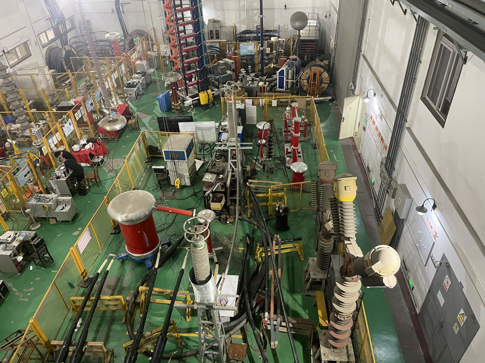
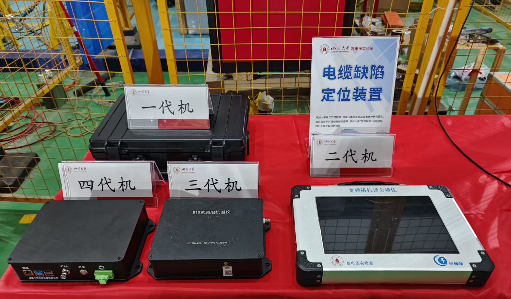
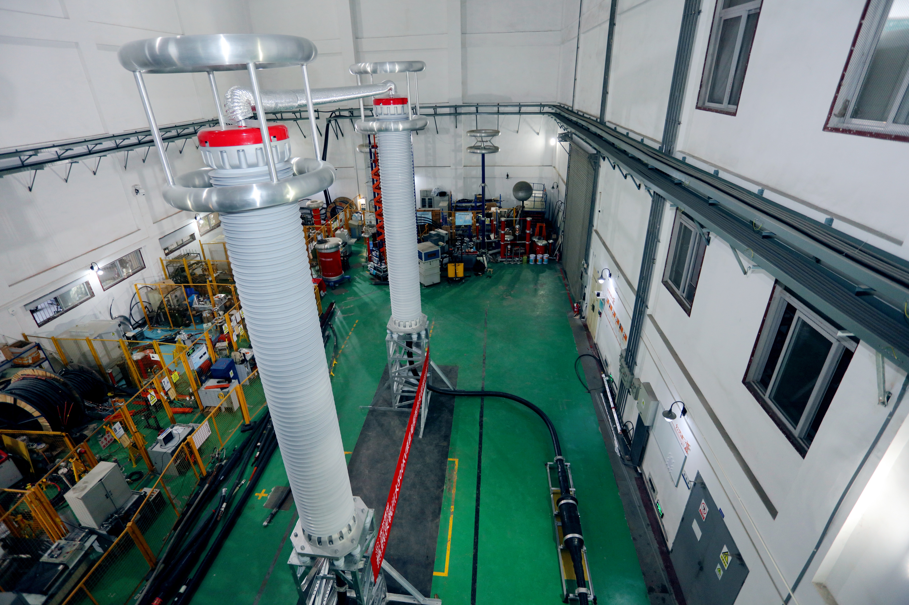

HV Lab
HV Lab高电压与绝缘技术
Homepage · 四川大学
四川大学高电压实验室
High Voltage Lab. of Sichuan University
四川大学高电压实验室成立于1953年，是四川大学下属的科研机构，位于该校望江校区。实验室以高电压技术研究为核心，拥有24×36×19立方米及12×6×3立方米的高电压试验大厅，配备交流、直流和冲击高压电源等设施，其中冲击电压可达1800kV，可开展500kV电压等级设备的高压试验，承担电力系统科研与教学实验任务。现有科研人员20余人，涵盖教授、副教授及工程师等专业梯队，研究方向包括输电线路雷电监测、高压电缆网状态评估及绝缘修复技术等 。
实验室在西南地区开展科研活动，参与了国家电力能源建设、高层次人才培养、科学研究及社会服务等工作。早期研制的串级式250kV试验装置在西南高校的同类装置中电压等级较高，后续开发的500kV试验装置使其具备了开展500kV电压等级试验的能力。近年来研究聚焦于电力电缆绝缘老化修复、安装缺陷检测等领域，在有机硅液体绝缘修复技术方面取得研究成果。实验室搭建了“500 kV超高压交联聚乙烯电缆及附件实验平台”，该平台在高校中较早建成500 kV电压等级的电缆及附件装备实验平台。实验室同时提供高压实验工程服务及技术培训
实验室成果展示Gallery






研究方向Research
方向1. 电力设备状态监测与故障诊断
本团队围绕变压器、GIS、电缆等核心电力设备，融合多模态传感与深度学习开展状态监测、故障诊断与寿命预测研究，致力于实现从被动检修向预测性维护的转变。
02方向2. 电缆绝缘老化、诊断及修复
电缆绝缘研究揭示水树—电树老化机理，发展高灵敏分级诊断与频域定位技术，并以复合修复液定向注入恢复绝缘性能。
03方向3. 高压电缆逸出气体的三域指纹特征及状态诊断
融合机器学习特征分析与电缆产气机理，构建氢气浓度、热产气组成和放电相关信号三域指纹，为高压电缆状态分级警示与故障辅助诊断提供可追溯的判据。
04方向4. 透明地下电缆系统(TUCS)
透明地下电缆系统(TUCS)是由我们团队率先提出的新一代地下电缆系全息感知体系。